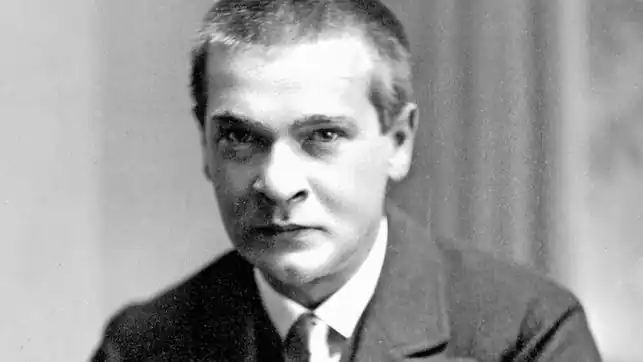
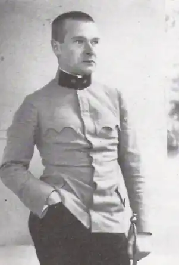

ТРАКЛЬ, Ґеорґ (Trakl, Georg — 03.02.1887, Зальцбург — 03.11.1914, Краків) — австрійський поет.Історію своєї душі Тракль написав особисто — вона вся у його віршах. Коротке (27 років!) земне життя поета вивчене біографами від першого до останнього дня. Він народився у Зальцбурзі 3 лютого 1887 p., о другій годині пополудні — у батьківському будинку, на Ваагплатц ("Площа ваг"). Батько — Теобальд Тракль (1837—1910) — крамарював залізними товарами. Матір — у дівоцтві Марія Катарина Халік (1852—1925) — колекціонерка та реставратор картин і антикваріату, вихованням дітей (а їх було шестеро, Ґеорґ — четвертий) себе особливо не обтяжувала, передовіривши їх гувернантці Марі Борінґ, француженці. До старших — сина Густава, дочок Марії та Терміни, після Ґеорга додався ще молодший син Фрідріх, а в 1891 р. — молодша дочка Марґарета, майбутня муза брата-поета. За спогадами Фрідріха, "Ґеорґ був таким самим, як і всі ми: життєрадісний, дикий, здоровий". Із п'яти років Ґеорґ відвідував підготовчу школу при католицькому педагогічному училищі. У 1897 р. його віддали у гімназію; вчився він погано, у четвертому класі залишився на повторний курс, на випускних іспитах за сьомий клас не склав грецької, латини та математики. У 1905 p. T. влаштувався помічником у зальцбурзьку аптеку і саме тоді заохотився до наркотиків — морфію та вероналу.
Віршувати Тракль почав ще у гімназії. Згодом він створив кілька п'єс-одноактівок, дві з яких — "Поминальний день" і "Фата Моргана" — у 1906 р. навіть були поставлені у зальцбурзькому театрі, та прозові твори — "Країна мрій" і "Марія Магдалина". У 1908 р. відбувся поетичний дебют Тракля — у "зальцбурзькій народній газеті" опубліковано вірш "Ранкова пісня". Того ж року поет-початківець вступив на фармацевтичне відділення Віденського університету, після закінчення якого повернувся додому, у Зальцбург, магістром фармацевтики. У 1910 р. поет був зарахований на однорічну добровільну службу в армії. "Що за пекельний хаос ритмів та образів у мені!" — писав він своєму другові Е. Бушбеку, скаржачись, що будь-який зовнішній поштовх кидає його "у гарячкове духовне сум'яття і маячню".
Після служби в армії Тракль влаштувався рецептаріусом у ту саму аптеку "Біля білого ангела". Біограф поета Ф. Фішер зауважив: "Коли він на службі, він далекий від світу, далекий від людей, далекий від їхніх проблем. Він сидить, його голова у долонях, занурена у власні думки; він цілком утрачений для світу". У 1912 p. Тракль зблизився із Зальцбурзьким літературно-музичним товариством "Пан" й одночасно влаштувався військовим провізором при аптеці гарнізонного госпіталю в Інсбруці. В авторитетному журналі "Бреннер" з'явилася його перша публікація — вірш "Теплий вітер у передмісті", а через деякий час — "Псалом" — і він став відомим у вузьких літературних колах. У Тракля з'явилися перші наслідувачі, але у їхніх віршах, як зауважував сам поет, не було "жадібної лихоманки життя". Тракль навпереміну мешкав в Інсбруці, Зальцбурзі та Відні, три тижні провів у Венеції. Він ретельно працював над віршами, по багато разів переробляючи майже кожну поезію. Поезія, провінційне богемне життя, жінки, вино, наркотики — всьому цьому Тракль віддавався пристрасно, захоплено. У плані творчості слід зауважити, що поезію Тракля неможливо уявити без Маргарети — без перебільшення, музи брата-поета. її у своїх віршах він називає "сестрою", "коханою", "юнкою", "черницею", "пломенистим демоном". Сучасники дивувалися, наскільки брат і сестра схожі — не лише зовнішньо, а й за внутрішнім складом. У 1913 р. у Лейпцигу вийшла перша поетична збірка Тракля — "Вірші" ("Gedichte") у серії "Судний день" у видавництві "Курт Вольф". Наступного року поет підготував до друку другу книгу віршів — "Себастьян у сні" ("Sebastian im Traum") й отримав засновану австрійським меценатом Л. Вітгенштейном стипендію для бідних письменників — 20 тис. крон, проте ні видати книгу, ні скористатися стипендією вже не встиг, оскільки розпочалася Перша світова війна. Як резервіста Тракля відразу ж призвали в армію і в колишньому чині лейтенанта направили на фронт, у польовий госпіталь, рецентаріусом, а вже 3 листопада 1914 р. він помер у госпіталі від зупинки серця. "Суїцид унаслідок інтоксикації кокаїном", — було записано у його історії хвороби. Час смерті — дев'ята година вечора. Його поховали на Роковицькому кладовищі у Кракові, а 7 жовтня 1925 р. прах Тракля перенесли на кладовище у Мюлау, поблизу Інсбрука. 21 листопада 1917 р. звела рахунки з життям обожнювана сестра-муза Маргарета. "Мені ніколи не було дано таланту говоріння", — писав Тракль своєму однокласникові К. фон Кальмару. Поміж усіх способів висловлення думки поет віддавав перевагу "писемному слову". Слова, які він написав, пережили свого автора вже майже на століття, вплинувши на багато чого з написаного та ненаписаного у XX ст. І справа не лише і не стільки у нових поетичних формах і "новаторських мелодійно-ритмічних композиційних фігурах" (В. Ментагль), а швидше в тому, що створений Траклем поетичний простір має якусь цільність, автономність і завдяки цьому може скільки завгодно існувати в часі, зостаючись органічною частиною культури. Із вірша у вірш у творчості Тракля мандрують схожі на галюцинації образи в обов'язковому супроводі звуків і запахів. Елементи вірша рухаються і взаємодіють за законами, які інтуїтивно зрозумілі, проте не піддаються точному формулюванню, і тому деякі критики означують їх "законами музичної побудови" — все це уможливлює вважати Тракля поетом "єдиного вірша", який постійно створював, обживав і одухотворював один і той самий ліричний простір. Сприймаючи "всі голоси, якими розмовляє навколишній світ, як безжальні та болісні", Тракль вгадує співіснування у світі "висловленого" і "несказаного" (саме ці поняття через кілька років отримали у працях іншого австрійця, Л. Вітґенштейна, статус найважливіших філософських категорій і лягли в основу філософської системи). "Несказаність пташиного польоту" не відпускає поета, оскільки потребує висловлення, і на допомогу словам приходять паузи, мовчання, які відводять Тракля від традиційного римованого вірша до верлібру і багато в чому формують своєрідний поділ на рядки та строфи у його пізніх віршах. "Я врешті-решт назавжди залишуся бідним Каспаром Саузером", — писав Тракль своєму другові Е. Бушбеку. Як і Каспар — юнак, знайдений у XIX ст. в одному із забутих підвалів Нюрнберга та змушений вчитися людської мови по-новому, поет постійно стикався з неможливістю висловити нуртуючу в ньому стихію образів і почуттів мовними засобами, злиденними порівняно з цим багатством. До образу нюрнберзького знайди, який незабаром загинув від руки вбивці, поета вабить і передчуття власної ранньої смерті — мотив, який знову і знову виникає у його віршах. Смерть, побоюється він, завадить і йому опанувати мову "несказаного", тобто "народитися у вічність". Власне, його "Пісня про Каспара Саузера" і про це також: Весна і літо й гожа осіньПраведника, його м'яка ходаВздовж темних покоїв мрійників.Вночі він залишався наодинці з власноюзорею;Бачив, як падав сніг на чорне гілляччя, Як у сутінковому коридорі майнула тіньубивці.Срібно похилилася голова неродженого.(Тут і далі пер. Т. Гавриліва)У пошуках рятунку від "безжальних голосів" Тракль переповнює свій ліричний світ запахами, шепотами та шерехами, насичує його кольором. Увага поета до "немовленнєвих засобів" цілком закономірна, враховуючи прагнення наблизитися до "несказаного": Снопами сальв спалахують сонця;В старому парку що за карнавалля,Запале вглиб небесного провалля.Зойк фавна ще жаскіший, ніж мерця.Між крон рябіє жовч його лиця.Серед красоль джмелі ведуть баталля. Ось мимо лине вершник в задзеркалля.Тополі в'ють зміїстість манівця...("Казка")У ранніх віршах Тракля (1907-1910) ще відчутна емоційність надриву та розриву, холодна ностальгія за колишньою цілісністю, яка пізніше зникає. Поет не закликає до створення нової системи цінностей, оскільки таке "створення" неможливе в принципі. Звідси часте спогадування холодного металу та каменя. Те, що зазвичай розуміють під словом "смерть", у Тракля асоціюється з фіналом розкладу, тліну; вона — тотальне знищення, непорушність: Мацання: всюди тернина одна;В сні: блювотина, ходіння по лезі;Пекло, пробудження, зелень з вікна;Страх і гойдання в хиткому ковчезі.Темрява сходів, незримі сліди,Тінь незнайомки біліє із неї. — Грішник у синь задивився, туди...Тлінне вспадкують щурі та лілеї.("Суд")Український читач відкрив для себе у повному обсязі творчу спадщину найсамобутнішого австрійського поета Тракля у 1997 p., коли вийшли друком його "Твори" у перекладі Т. Гавриліва. За Є. Соколовою